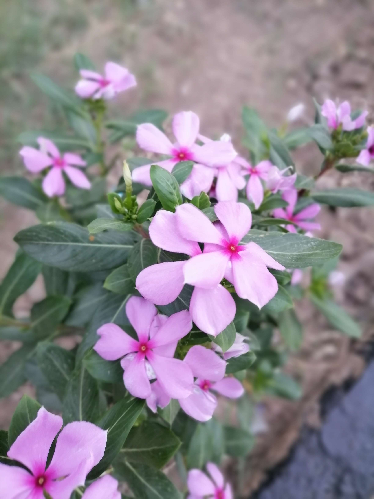
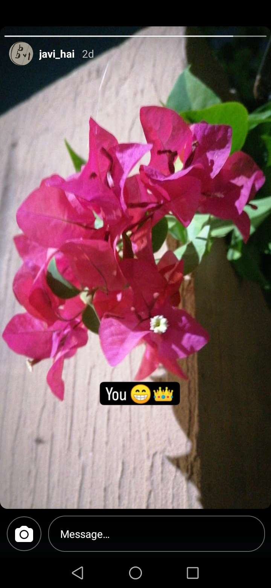
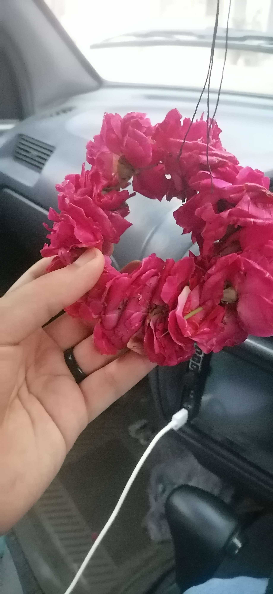
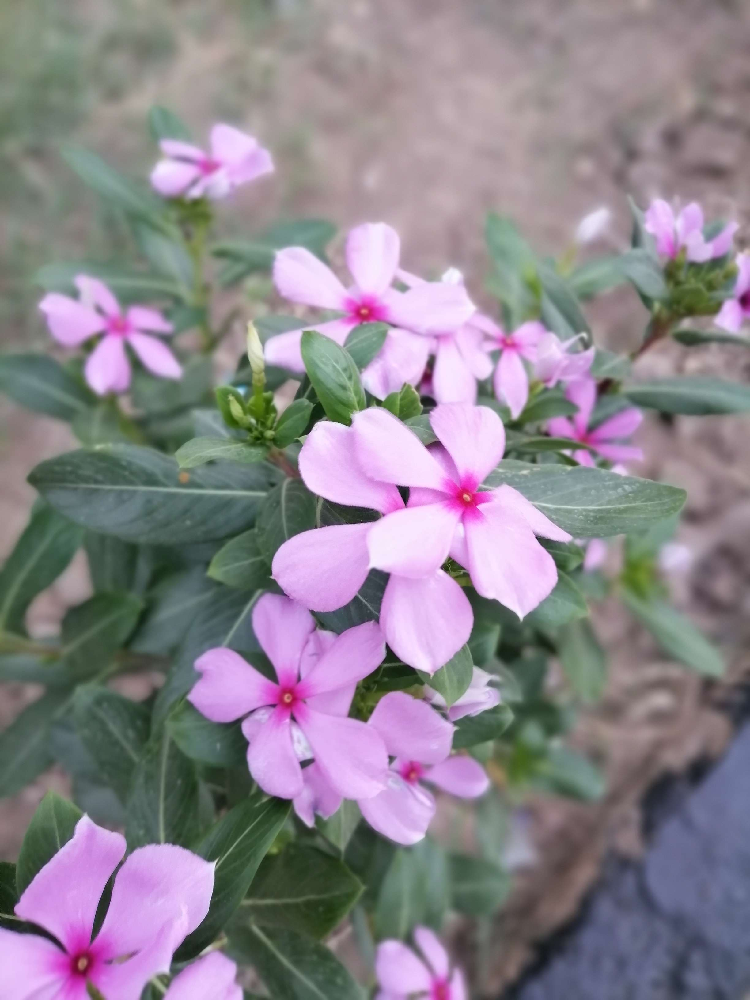
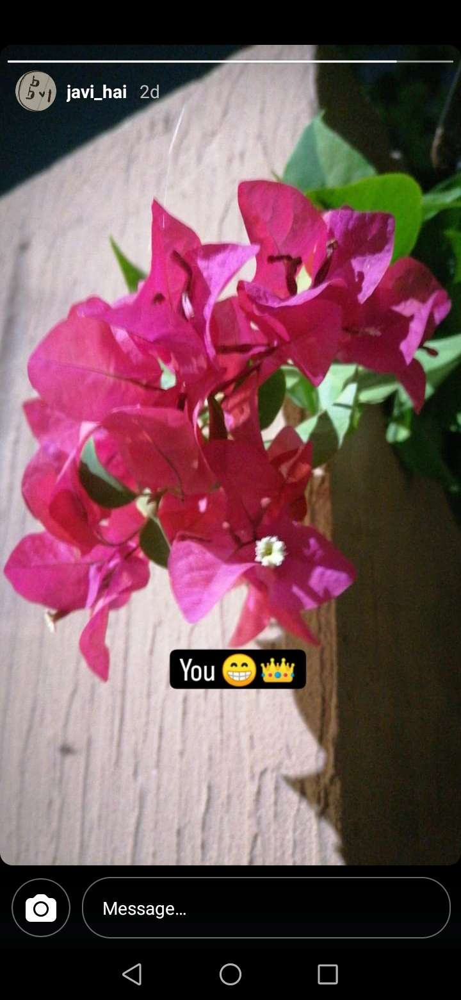
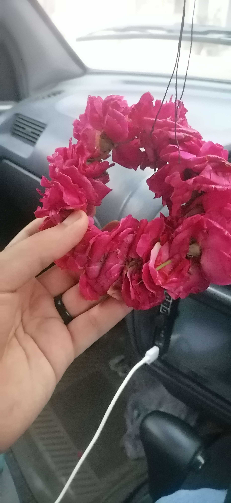
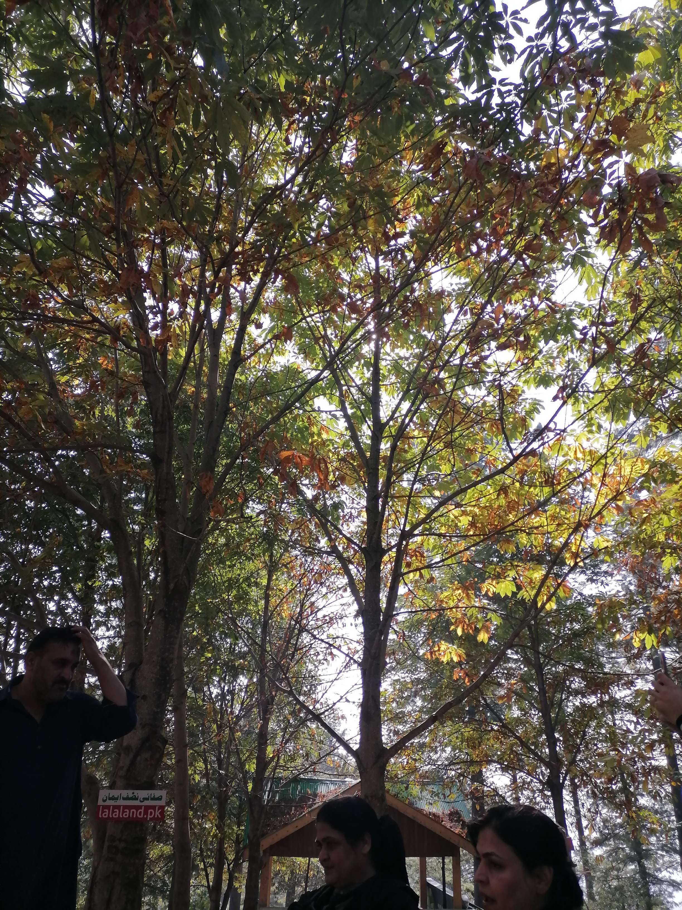
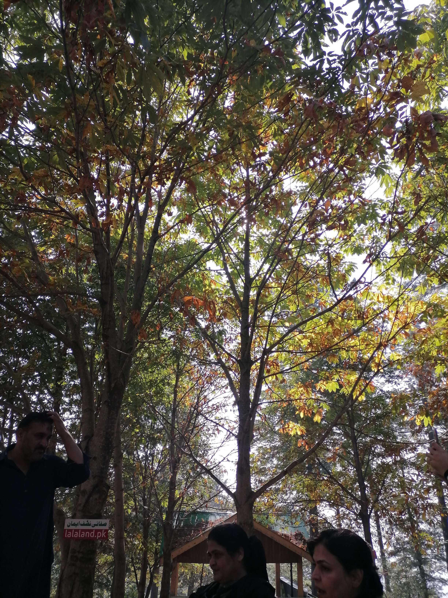

 

I don't know how to even begin telling you how your soul is unbelieveably beautiful. Your soul in all aspects, religious and wordly, is beautiful to it's smallest portion. A rice grain worth of your soul is more precious and sweeter than a million souls combined, if one was to picture your soul as a wordly object just to perceive it then your soul would look like a shining diamond but which is also soft to the touch. Unbelievable I know, How can one thing be like a diamond but also be soft as a cloud ? that's the beauty of your soul, A soul which is beautiful and soft and unbelieveably priceless.
I know and believe that your soul is blessed by Allah, your soul is made by our creator, the creator of the entire existence made your soul himself with love, "Indeed, We have made the signs clear for people of sure faith", indeed if anyone saw your soul they could never ever deny Allah's sign because your soul is one of the biggest proofs and signs of Allah's beautiful design. No doubt your soul was made to guide us to the gates of heaven because your soul was made from a piece of heaven itself. No doubt your soul is blessed and is itself a blessing for us and specially me.
Your soul is like a fragile rose, fragile to the point that even the smallest puch of the wind could wound it's petals, in a bedrock of sharp and brittle rocks. your soul was hurt and keeps getting hurt from this world, but you still stand strong. You may feel like you don't belong on this bedrock but this bedrock needs you,it needs your fragnance,it needs your color and this world needs Allah's blessings through you.
you are the most amazing of souls. I hope autumn never makes you lose your petals.